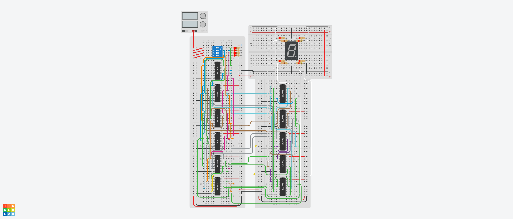

08 / Digital logic / Designed & simulated
Optimizing a 5421 BCD display decoder
Designed and optimized the logic that converts a four-bit 5421 BCD input into a seven-segment digit. Shared Boolean terms reduced the final AND/OR gate count to 40, with C++ truth-table checks and a Tinkercad circuit simulation.
- My contribution
- Logic design, optimization & simulation
- Tools
- Boolean optimization · C++ · KiCad · Tinkercad
- Outcome
- 40 AND/OR gates in the final design

The problem
Design a 5421 BCD decoder using only AND, OR, and NOT gates. A four-switch input drives a common-cathode seven-segment display. The design accepts alternate encodings of the same digit and blanks the display for input values of 10 or greater.
The engineering work
I started with a truth table and minimum sum-of-products and product-of-sums expressions. Those produced baseline counts of 75 and 87 gates. I then built a prime-implicant table using the Quine–McCluskey method and selected terms that could serve multiple segment outputs.
A C++ program checked the resulting expressions against the original truth table. Shared subexpressions guided the schematic, which I translated into KiCad and then a Tinkercad simulation.
The result
75-gate SOP baseline → 40 AND/OR gates in the final circuit.
The reduction came from looking across all seven outputs for reusable terms. The repository documents the truth table, prime-implicant work, verification code, schematic, and simulated circuit.
What this demonstrates
- Converting an input/output requirement into a complete truth table.
- Comparing design alternatives using a concrete resource measure.
- Checking a simplified implementation against its original specification.
{kind=link}